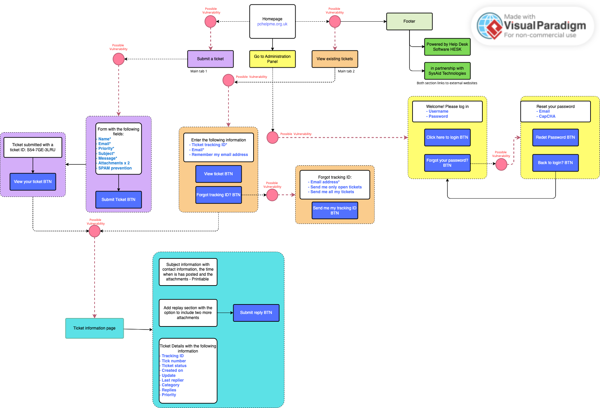

Website Audit:
This mini-audit report aims to identify the vulnerabilities of the website pchelpme.org.uk.
Upon initial inspection, this website may not appear to be a typical consumer-facing platform, given its .org domain extension. Typically, websites with this extension are utilised by non-profit organisations, such as charities (Mailchimp.com, 2023). Examples of charities that use the .org extension include cancerresearchuk.org and britishcouncil.org. (Charitycommission.gov.uk, 2023).
The website's purpose and services need to be clearly stated. The only indication of its intended users is the URL, which suggests that the website is intended for the selected organisation and possibly for non-profit organisations. This could explain why the site has a .org domain.
The website uses HTTPS to encrypt data transfer, making it secure for confidential information. However, HTTPS does not protect against CSRF attacks, which can expose user records to threat actors. All websites, including modern ones that use HTTPS, can be vulnerable to CSRF attacks (Cloudflare, 2022; S, 2023).
This website uses Softaculous, which offers pre-built scripts for sites like WordPress. However, Softaculous has been criticised for security flaws, including a 2013 XSS vulnerability and a 2023 Loginizer plugin vulnerability (National Vulnerability Database, 2024; CVEdetails.com, 2023).
Website User Map:
Figure 1: Show the basic structure of the pchelpme.org.uk user journey map, with points of potential vulnerability.
Upon visiting the website, users have three options: Submit a Ticket, View Existing Tickets, and Administration Panel. This poses several issues.
- Submitting a ticket does not require an initial user login.
- No user verification is currently enabled.
- Users can attach two sets of files, with no scanning process implemented to mitigate malicious files.
- SPAM prevention is visible, but it is outdated
- Ticket complications allow threat actors to send more malicious content.
- Administration Panel
- Login using without 2FA is not visible.
- Possibility of SQL injection due to the website cross-site scripting (XSS) due to input fields having poor Sanitation (Bhosle, 2019; Kingthorin, 2013).
Legislation
There is no mention of Cookies or how the site handles data; as per UK law, Cookies are identified as an online identifier, and the website that collects any personal data must do so in compliance with UK GDPR (Ico.org.uk, 2023b; Ico.org.uk, 2023a; Thompson, 2023).
Cyber Kill Chain
The Cyber Kill Chain outlines the different stages of a cyberattack, from initial reconnaissance to data extraction. It helps to mitigate security breaches, ransomware, and advanced persistent attacks (APTs).
Lockheed Martin initially developed it to identify, prepare for, engage, and destroy military targets. Now, the framework has evolved to anticipate and address various attacks, including insider threats, social engineering, and advanced ransomware. (Buckbee et al. 2016; Lockheed Martin, 2023).
Lockheed Martin - Cyber Kill Chain Infographic

Figure 2: An infographic of Lockheed Martin’s Cyber Kill Chain (Lockheed Martin, 2023).
| Cyber Kill Chain | www.pchelpme.org.uk | Mitigation | Tools |
|---|---|---|---|
| Reconnaissance | Identify the website through an organisation that may use their services. | A dedicated login section for users before accessing the site | Login screen with 2FA enabled and a modern reCAPCHA accessibility |
| Weaponization |
|
|
Prevention is listed with OWASP best practices, including readily available virus scanners and information on government websites for data compliance. |
| Delivery | Remote access XXS or SQL injection | Secure login pressure and a non-XSS-based application | 2FA, a Google login alternative application that has a higher level of security |
| Exploitation | Malicious code via upload or XSS access | Any file uploaded to be scanned and XSS prevention methods | Anti-virus, code review |
| Installation | Malicious code on servers and company computers | Anti-virus | Anti-virus software and Network segmentation |
| Command & Control (C2C) | XSS changing the site, adding non-scripted code | XSS prevention | OWASP best practices |
| Action On Objective | Obtain data records | Implement correct data handling process. | Basic cybersecurity practice. |
(PortSwigger, 2023; OWASP, 2021a; OWASP, 2021b; UC Berkeley, 2023).